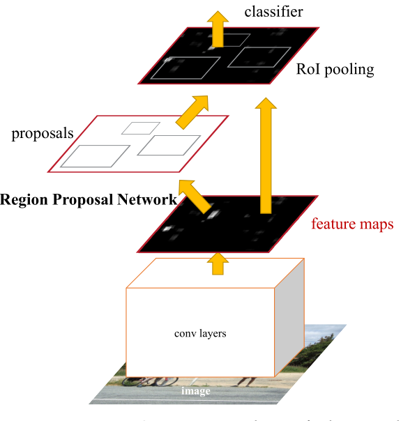

文章《Faster R-CNN: Towards Real-Time Object Detection with Region Proposal Networks》是为了改进Fast R-CNN而提出来的。
简介
在R-CNN中的roi都是独自传入到经过与训练的CNN的分类器和box-regression中去造成了对应每个roi都要经过独自的卷积操作十分耗时，Fast-RCNN解决了没有共享卷积层的问题，但是他们共同使用的selective search的边框生成方法过于复杂，成为了计算时间的一个瓶颈，因为Fast-RCNN在确定ROI后可以在GPU上运行，但是selective rearch是不可以的，它只能在cpu上运行，因此这大大制约了系统的时间提升，那么作者提出将roi的选择也置于GPU上就可以大大加快Fast-Rcnn的预测。因此作者又提出了Faster-RCNN使用RPN的边框生成算法而彻底的抛弃了selective的算法。
因此在这篇文章中作者提出了在特征图上对ROI进行选择，这样就可以使用GPU和共享fast-Rcnn的主要结构，在Fast-RCNN的最后一层特征图上我们构造一个RPN,通过添加一个额外的用来同时进行物体识别和边框回归的卷积层，因此这是一个全连接网络，因为我们需要进行边框的回归就必须输出四个偏移量，外加判断是否为背景的边框识别，这都是依靠全连接层的将为操作才能实现的。
同时为了统一Fast-Rcnn和RPN作者提出了一个训练方案，使用fine-tuning在训练区域判断任务和已确定区域的Fast-RCNN中进行交替迭代，这个方法的收敛效果很好，并且产生了卷积层共享的统一结构，置于RPN为何要和Fast-Rcnn要在卷积层保持结构的不变性，主要的原因在于这幅图
在实现的时候，proposals的生成网络需要从最后的卷积层中提取一个256d的特征来确定原始的ROIs同时判断值是否为背景只有在确定了这两项后才能送入到Fast-Rcnn中进行boxing-regression和判断物体的种类。为了不重新构建后续的网络也没必要重新构建最后的网络，共享卷积层是最好的选择。
相关工作
1.proposals生成
2物体检测的深度网络
在R-Cnn中我端到端的对物体进行分类来判断它属于物体的哪一类或者背景，同时对于每个类都会生成所对应的边框回归的参数，在判断好哪一类后就可以选择对应的边框回归参数！R-CNN仅仅相当于一种分类器，他的准确率极大的取决于他的边框区域生成模型，在 OverFeat 方法中，一个全连接层被训练来预测边框的坐标，注意是坐标不是回归量，然后被送到一层用来检测类确定的物体的回归。在 MultiBoxs方法中，该连接层在确定原始坐标后，它产生的是多种类不确定的边框回归，也就是说这两个方法中，第一种是在确定了类别后使用特定类的参数来进行边框回归的，但是第二种是将边框回归和物体分类独立起来了，需要产生更多的参数，在作者的模型中采用的是第一种方法
Faster-Rcnn
Faster-Rcnn的结构如上，由两个部分组成，一个是深度全卷积网络来产生proposals信息，第二个是使用proposals的Fast-Rcnn detector，RPN来告诉Fast-Rcnn需要看那个区域
Region Proposal Networks(RPN)
RPN网络将一整幅图片（大小无所谓）作为输入，输出一些矩形框，且每一个都有非背景得分，为了产生位置区域，我们在输出特征图的最后一层使用n*n的子框从最后一层的卷积特征图上提取特征，之后将特征隐射到256d的区域中（我的理解就好在是颜色的三基色一样，通过映射，就可以判断这是背景与否），然后将这256d的数据送入的两个全连层中分别用来判断这是否为背景的（cls）与边框回归（reg）在本文中我们设置n=3，因为接收域太大了过程如下
Anchors
在窗口滑动的过程中，我们同时预测了多个区域 proposals，对于每个边框最大可能的形状有k种，因此CLS有2k个输出（即该形状的参考边框是否是背景），reg有4k个输出（及对该边框如何进行回归），同一个location的k种proposals我们称之为anchor，而它可以通过中心点已经缩放度和长宽比来定义，我们通常使用3种缩放比例和3种长宽比来默认初始化一个anchor，那么整个特征图就有MHK个anchor了
Translation-Invariant Anchors
如果一个物体被翻转了，那么我们的proposal也应该能够翻转并且使用相同的函数可以预测它，这样翻转不变性在我们的anchor中可以得到保障对比之下MultiBox方法使用k均值算法来产生800，并不具备翻转不变性，也就是说在一个objection在翻转后我们的方法在相同的参数下都能准确的预测到它的proposal，这就是那4k数量的作用了，如果是在确定了使用某个类型的anchor就会损失这样的性质。同时也减少了我们的输出的数量也就导致了参数的减少。
Multi-Scale Anchors as Regression References
对于不同大小的图片输入情况，传统的做法有两种
1.对图像进行多尺度的缩放后独自计算各自的特征图，但是这太耗时间了
2.使用不同的大小的bounding-boxing来对objection进行判别，而所谓的不同大小就是金字塔型的
我们的anchors的方法就参考了金字塔滤波，为什么要这么说尼？因为我们同一个特征图区域对应9种proposals，很明显就是金字塔滤波。正是这种类似于金字塔滤波的设计，我们能够在没有添加其他损失项的情况下解决不同大小的目标问题！
Loss Function
在训练RPNs的时候我们对每个anchor指定了一个二值标签，我们对以下两种anchor判定为正的
1.与 ground-truth box有着最高的iou的那些anchor
2.iou高于0.7的那些anchor
那么我们的损失函数如上，其中i是mini-batch中第i个索引pi是i个anchor为物体的概率 p i∗为正标签（1）如果该anchor满足上面的条件1，2，后面一项如Fast-Rcnn的定义相同
Training RPNs
RPN可以通过反向传播或者SGD来进行训练每个mini-batch都来源于一幅图且包含了多个正的和负的案例anchors,优化这样的loss是可能的，但是这回会出现一个问题，会趋向于将所有的anchors都训练为负样本，因此我们选择从一幅图中选取出256幅anchors其中正负样本的比例是1：1，如果一幅图中正样本的数量少于128，就使用负样本补上
Sharing Features for RPN and Fast R-CNN
到现在为止我们已经说明了RPN是产生区域proposals的，当时还未说明如何使用CNN进行识别，对于其中的目标识别我们采用R-CNN，并且我们使用共享卷积层的由RPN和F-Rcnn组成的联合结构，由于RPN和F-RCNN分开训练会产生不一样的卷积层参数，因此需要一项技术来让这两个网络共享卷积层，而不是独立的训练两个分离的网络，在这里我们有三种训练方法：
1.交替训练
我们首先训练RPN，然后使用这些proposals来训练F-RCNN ，之后再使用参数初始化RPN，如此迭代
2.近似联合训练

在SGD的过程中，在训练的时候先前向传播，产生proposals后就认为proposals是固定的，预训练好的，接着训练FRCNN，损失函数是他们共同的损失函数，这种方法同时迭代两个网络的参数，作者认为效果不是很好
总结
faster rcnn 在fast rcnn 的基础上消除了ss的过程，缩短了时间，具体的解释在后续的代码部分解释